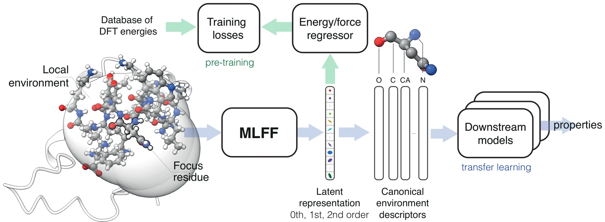
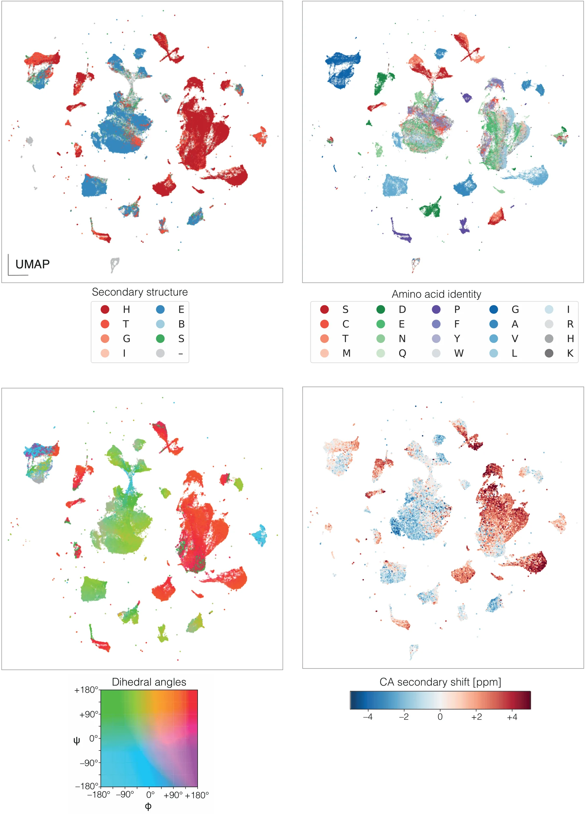
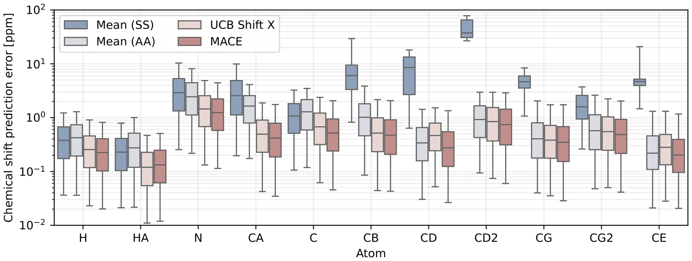
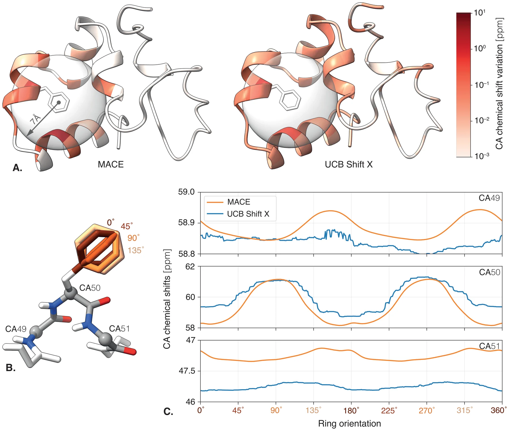
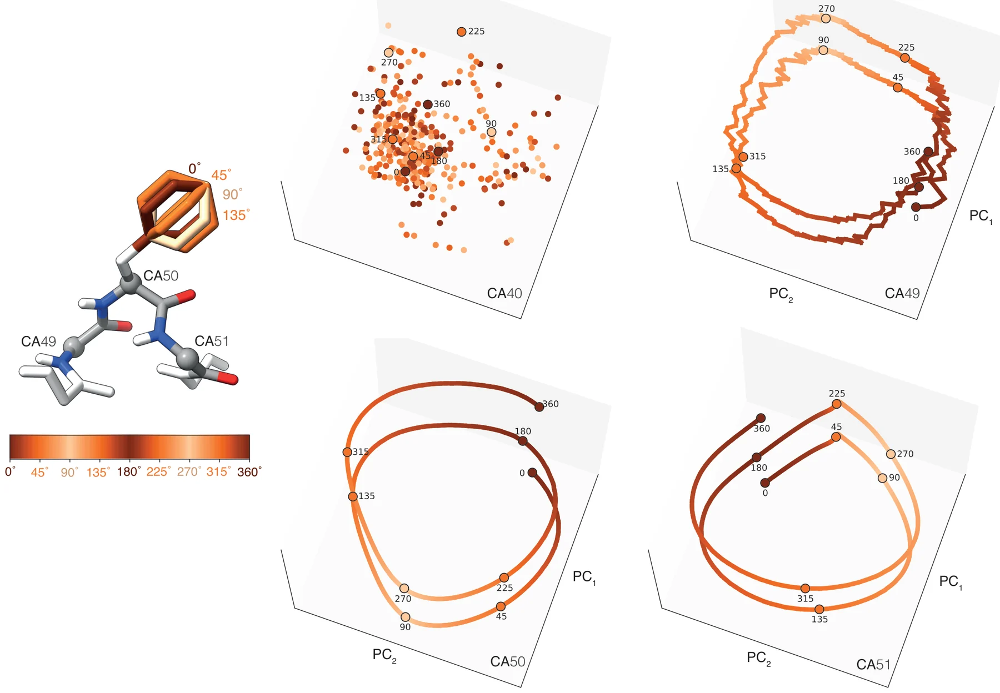
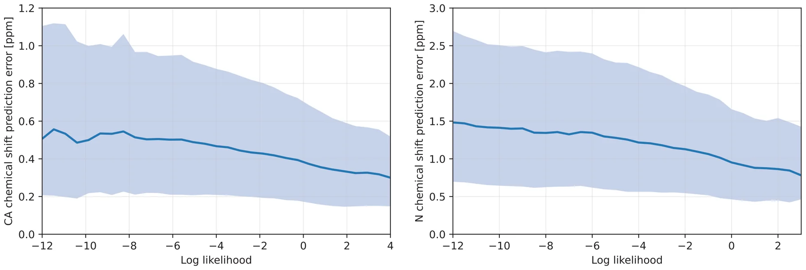

In short
Machine learning force fields (MLFFs) are equivariant graph networks pretrained to regress quantum-chemical energies and forces of small molecules. We use their frozen features to describe the local 3D neighborhood of each amino acid in a protein, a domain they never saw. Zero-shot, the embedding space already clusters by structural and chemical properties. With small heads trained on top, the features beat sequence-model embeddings and set the state of the art for predicting nuclear magnetic resonance (NMR) chemical shifts, a measurement that is very sensitive to the local environment.
What’s new. Force fields become general-purpose representation learners, not just simulators. Their features behave physically where the current best chemical-shift predictor doesn’t, and because the feature space is so well structured, density estimation in it gives the first confidence score for chemical-shift prediction.
What does an amino acid "see"?
A lot of what a protein does happens locally, in a binding pocket, a catalytic site or a single flipping side chain. To do machine learning on these local environments requires a good way to describe them, one that captures the atoms, the bonds and the subtle chemistry around them. Hand-crafted descriptors (dihedral angles, hydrogen bonds, electrostatics) capture part of it, but they don't generalize well. Sequence models like ESM capture a lot, but they don't really "see" the 3D chemistry.
Meanwhile, in computational chemistry, people train neural networks to reproduce quantum-mechanical energies. These MLFFs (MACE, AIMNet, OrbNet, Egret and others) are trained on millions of small molecules with the accuracy of density functional theory (DFT), the standard quantum-chemistry method, so they have to learn how atoms interact. They're used for molecular dynamics, and nobody really treats them as representation learners. We asked what happens if we do.

The construction is simple on purpose. Encoding a whole protein with thousands of atoms would be slow and mostly redundant, since we only care about local information. A 5 Å environment is cheap, sensitive to local changes, insensitive to what happens far away, and, because the features are defined per atom, it transfers to proteins the model has never seen. The atomic building blocks are the same even when the sequence and the fold are different.
Zero-shot, the space already makes sense
The first thing we did was just look at the features. We took 165K environments from over a thousand non-redundant protein chains, passed them through MACE, a widely used MLFF, and projected its features into 2D, with no training at all.

With small networks trained on top of the frozen features, we predicted secondary structure, amino acid identity and pKa values (how readily a side chain gives up a proton, which depends on its local electrostatics). The MLFF features beat learned embeddings, ESM-based features and classic pKa predictors. Which force field was best depended on the task, with MACE and Egret best for structure and AIMNet best for pKa.
A predictor that respects physics
The task we cared about most was chemical shifts, the most widely measured NMR observable and a very sensitive reporter of the local environment. The current state of the art, UCBShift, combines sequence and structure alignment to reference proteins with a random forest. It's accurate, but it depends on having similar references, and it isn't obviously grounded in the local physics (a point that Seek and You Shall Fold later ran into as well).
Our predictor is a small neural network on the frozen MLFF features of the target atom, with a separate model for each atom type. It beats UCBShift on both backbone and side-chain heavy atoms. The one exception is the Hα hydrogen, where it's slightly behind.

Lower error alone does not show that the predictor behaves physically. A clean test is the ring current. When an aromatic ring like phenylalanine's sits in a magnetic field, its delocalized electrons circulate and create their own small field, which shifts the signals of nearby atoms. Rotating the ring about its axis should change those shifts in a very specific way. Before looking at the models, here is what the physics predicts.
What a rotating ring should do to its neighbors
This is the textbook point-dipole approximation, not our model. The shift at a nearby atom is proportional to (1 − 3cos²θ)/r³, where r is its distance from the ring and θ the angle to the ring's normal. Rotate the ring and watch the four Cα atoms. Two things to notice. Every curve repeats every 180°, because flipping a ring over gives the same ring. The effect also fades fast with distance (1/r³). At 3 Å it’s about a ppm, and at 10 Å it’s essentially gone.
So that's what a physically sensible predictor should do. We ran this experiment synthetically on a real protein structure. We took a phenylalanine (residue 50 in PDB 1ZV6), computationally rotated its ring through all angles, and asked both predictors for the shifts of the surrounding atoms.

Nobody told the model about ring currents. It learned that behavior from small-molecule quantum chemistry, and it carried over to proteins. We even see it inside the representation itself. As the ring rotates, the features of nearby atoms trace a clean closed loop with the same 180° periodicity, and the loop falls apart for atoms far from the ring.

Knowing when not to trust it
Because the feature space is so well organized, we can estimate a density over it, essentially asking "how typical is this environment compared to the ones we've seen?" This turns out to be sensitive. It scores relaxed structures higher than unrelaxed ones, and conditional versions of it separate helices, strands and turns.
The practical payoff is uncertainty. When an environment has low likelihood, the shift prediction is less accurate. As far as we know, that makes this the first confidence score for chemical shift prediction.

We kept the force fields frozen, and fine-tuning them on protein data might give more. Our Hα predictions are still slightly behind UCBShift. We also trained and tested on AlphaFold2-predicted structures (relaxed with a force field), which keeps the data consistent but isn't the same as experimental structures.
The takeaway
To predict forces, a model has to capture how atoms interact with their neighbors. Chemical shifts, pKa values and ring-current effects are consequences of those same interactions, and the interactions are the same in a small molecule and in a protein.
Unlike UCBShift, the resulting predictor is fully differentiable, so it can serve as a likelihood for gradient-based guidance.
Cite
@inproceedings{bojan2026representing,
title = {Representing Local Protein Environments with Machine Learning Force Fields},
author = {Bojan, Meital and Vedula, Sanketh and Maddipatla, Sai Advaith and Bojan Sellam, Nadav and
Rzayev, Anar and Napoli, Federico and Schanda, Paul and Bronstein, Alexander},
booktitle = {International Conference on Learning Representations},
year = {2026}
}